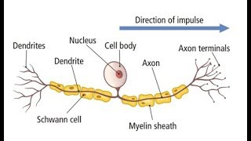

school
The nervous system
- The nervous system includes:
- Receptors, which detect stimuli
- For example, the eye converts light into nerve impulses
- The coordination centre which receives and processes information
- This includes the brain, the spinal cord, and the pancreas
- Effectors produce responses
- These include muscles and glands
- Nerve cells are called neurons
- They carry electrical impulses from place to place
- However, they are not like wires. The impulses are caused by the
movements of ions in and out of the neuron
- These impulses travel at speeds between 10 to 100 meters per
second
- A bundle of them is called a nerve
- When two neurons meet there is a gap called a synapse, where
electrical signals are converted to chemical ones
- There are two types of neurons, sensory and motor
- Sensory neurons pass impulses to the brain and spinal cord
- Motor neurons transfer impulses the the muscles and glands
- Impulses travel along the axon
- This triggers the ending of a neuron to release
neurotransmitters
- The chemicals diffuse across the synapse and bind with the second
neuron, stimulating the second neuron to transmit the impulse
- A motor neuron has a few different parts with different functions
- There are dendrites, which extend from a dendron
- Dendrites receive impulses from axons
- The axon carries impulses to the effector
- The myelin sheath, a fatty material, insulates the axon, preventing
'short circuits' with other axons
 Neuron|700
Neuron|700
- A sensory neuron has a similar structure to a motor neuron
- However, the cell body is located on the side of the neuron, rather
than at the front
- Additionally, the dendrites are not connected to the cell body,
instead they are at one of the ends alone

Sensory neuron|700